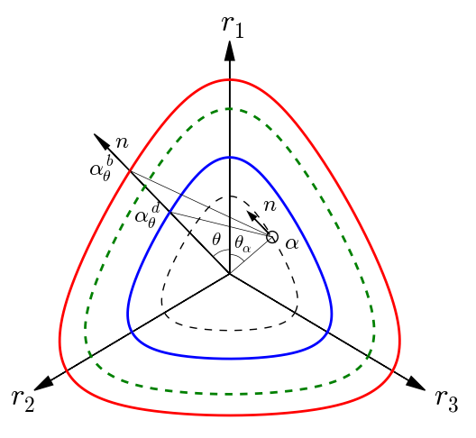
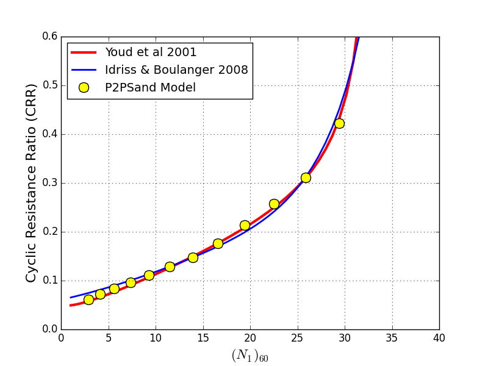

P2PSand 模型
P2PSand 模型指一种实用的双面塑性砂土本构模型，面向一般三维岩土地震工程应用，旨在刻画关键土动力学特性。该模型是 Dafalias 与 Manzari（2004）所建立、与组构剪胀相关的砂土塑性 DM04 模型的修改扩展。通过在不增加过多复杂性的前提下修订部分公式，模拟结果与各种室内或现场观测及经验关系在不同初始与加载条件下取得更好吻合。修改后的模型把所有与孔隙比相关的本构成份改为与相对密度相关，并采用更简便的标定流程（用原位数据，如归一化锤击数，而非室内试验数据），同时保留后者只用一套模型常数的极重要特性。模型遵循 DM04 模型的一般多轴表述，因此可用于一般三维边值问题。模型保留这样一项特性：用一套模型常数即可模拟不同初始相对密度与初始应力状态下的不同响应。
公式
弹性法则
为简单起见，该模型在弹性部分采用原 DM04 模型所提出的亚弹性公式。弹性部分的增量形式为
其中 \(p\) 为平均压力，由 \(p=-tr(\boldsymbol{\sigma})/3\) 定义；\(\boldsymbol{s}\) 为偏应力张量，由 \(\boldsymbol{s} = \boldsymbol{\sigma} + p\boldsymbol{I}\) 定义，其中 \(\boldsymbol{I}\) 为单位张量；\(\varepsilon_v\) 为体积应变，定义为 \(\varepsilon_v = tr(\boldsymbol{\varepsilon})\)；\(\boldsymbol{\epsilon}\) 为偏应变张量，由 \(\boldsymbol{\epsilon}=\boldsymbol{\varepsilon}-(\varepsilon_v/3)\boldsymbol{I}\) 定义；\(K\) 与 \(G\) 分别为弹性体积模量与剪切模量。
p2PSand 模型把弹性模量视为当前平均压力 \(p\) 与当前相对密度 \(D_r\) 的函数：
其中 \(v\) 为泊松比，\(p_{atm}\) 为参考压力（通常为大气压），\(G_r\) 为假定为 \(D_r\) 函数的材料参数。Cheng（2018）表明，线性函数
在与 \(1 \le (N_1)_{60} \le 33\) 对应的 \(0.15 \le D_r \le 0.85\) 范围内，对室内砂与原位砂都给出很高相关性；因此实际上未必需要更复杂的剪切模量随 \(D_r\) 的非线性关系，因为 \((N_1)_{60} \lt 1\) 的土几乎不适合任何工程，而 \((N_1)_{60} \gt 33\) 的土通常被视为不可液化，可改用更简单的本构模型。基于现场数据的回归（Andrus 与 Stokoe II 2000）支持 \(G_r = 1240 (D_r + 0.01)\)，这也是模型中的默认关系。不过用户仍可用 FISH 函数输入非线性的 \(G_r\)。
临界状态
出于同样的考虑——相对密度更便于由原位数据标定——我们对临界状态提出类似的幂律，但以相对密度 \(D_r\) 而非孔隙比 \(e\) 定义：
其中 \(D_{rc0}\)、\(\lambda_c\) 与 \(\xi\) 为材料参数，\(\xi = 0.7\) 可用于大多数砂。
或者，临界状态也可取双参数对数形式，表示为相对密度 \(D_r\) 的函数，即
假定当相对剪胀指标（Bolton 1986）\(I_R = -D_r \ln{( {p}/{p_c} )}\) 为零时达到临界状态。对石英质砂，建议材料参数取 \(Q = 10\) 与 \(R = 1\)。
在 FLAC3D 中所实现的模型版本里，用户可选择三参数或双参数临界状态之一。三参数临界状态关系预期具有更大灵活性以拟合更广泛的试验数据。
Lode 角依赖性
P2PSand 模型采用以下函数：
对给定 Lode 角 \(\theta\) 与强度比 \(c\) 插值 \(M_{\theta}=g(\theta,c) M_C\)，其中强度比定义为 \(c=M_E/M_C=(3-\sin{\phi_{cs}})/(3+\sin{\phi_{cs}})\)，\(M_E\) 为三轴压缩强度，\(M_C\) 为三轴拉伸强度，\(\phi_{cs}\) 为临界状态摩擦角。
边界面与剪胀面
P2PSand 模型采用边界面与剪胀面对 \(I_p\) 依赖的幂次形式：
其中 \(n^b\) 与 \(n^d\) 为材料常数。\(n^b\) 的典型值为 \(n^b = 0.16 - \phi_{cs}/400\)，其中 \(\phi_{cs}\)（以度计）为临界状态摩擦角；\(n^d\) 的典型值为 \(n^d = (4 \sim 7) n^b\)。对 \(M^d\)，实际上禁止对 \(M^b \geq M^c\) 设截止，使 \(M^d\) 可小于也可大于 \(M^c\)。当平均压力 \(p\) 较小时对 \(M^d\) 采用截止，意味着剪胀比 \(M^d/M^c\) 不能小于固定值 \(K^d_{LB}\)，该输入值通常在 0.5 到 0.8 之间。
屈服函数
应力空间中的弹性域是一个小锥体，屈服面由与 DM04 模型相同的函数定义：
其中 \(\boldsymbol{r} = \boldsymbol{s}/p\) 为偏应力比张量，\(\boldsymbol{\alpha}\) 为偏背应力比，\(m\) 通常是与 \(M^c\) 相比较小的值。本模型中不把 \(m\) 视为相关材料常数，而取固定值 \(m = 0.01 M^c\)。于是 \(\boldsymbol{m}\) 处对屈服面的梯度为
其中
且 \(\boldsymbol{n}\) 满足 \(tr(\boldsymbol{n})=0\)、\(\boldsymbol{n}:\boldsymbol{n}=1\) 与 \(\cos{3\theta}=-\sqrt{6} \times tr(\boldsymbol{n}^3)\)。
如 DM04 模型所述，若自原点作一条平行于 \(\boldsymbol{n}\) 的直线，该直线将分别与边界面和剪胀面相交于映象背应力比张量 \(\boldsymbol{\alpha}^b_{\theta}\) 与 \(\boldsymbol{\alpha}^d_{\theta}\)：
塑性剪切模量
P2PSand 模型中塑性剪切模量可设为
上述方程虽被证明对单调加载有效，但未克服 DM04 模型在循环加载中的两个缺点：一是若干循环后出现应力路径重复而剪应变幅不再增大；二是相对较大剪应变下阻尼比过高。回顾边界面塑性可随意定义 \(K_p\) 系数的巨大优势（只要 \(K_p=0\) 位于边界面上），为改善循环性能，P2PSand 模型在 \(K_p\) 公式中加入两个补充因子 \(f_1\) 与 \(f_2\)：
其中 \(f_1\) 与 \(f_2\) 是为改善性能而引入的函数。\(f_1\) 本质上是塑性刚度的退化因子，引入它是为消除应力路径重复而剪应变幅不再增大的现象。引入 \(f_2\) 是为在较高剪应变下减小滞回环面积（阻尼比）。
P2PSand 模型中会记录所谓最大应力比面（图 1（Figure 1）），其形状与边界面或剪胀面相同，但尺寸由 \(\boldsymbol{\alpha}\) 的历史位置确定，沿 \(\pi\) 平面中 \(\boldsymbol{r}_1\) 方向的最大半径为
其中 \(\theta_{\alpha}\) 为当前背应力比张量的 Lode 角。


图 1：\(\pi\) 平面中各面的示意：边界面（红）；剪胀面（蓝）；临界状态面（绿虚线）、最大应力比面（黑虚线），以及屈服面（黑圆）。
体积塑性应变
塑性体积应变的增量形式为
P2PSand 模型中剪胀 \(D\) 由下式给出
对原始加载（\({\parallel \boldsymbol{\alpha} \parallel}/{g(\theta_{\alpha}, c)} \geq M^m_C\)），其中 \(A_d\) 与后文将描述的组构剪胀张量 \(z\) 相关。当组构剪胀不显著或未发展时 \(A_d=A_{d0}\)，其中 \(A_{d0}\) 为材料参数，可由单调三轴压缩试验标定。
若状态位于最大应力比面之内，则剪胀被因子 \([K_{c} (\boldsymbol{\alpha}-\boldsymbol{\alpha}_{in}):\boldsymbol{n}]\) 折减。\(K_{c}\) 为循环加载或非骨干加载路径的调整参数。对原始或骨干加载，\(K_{c}=1\)。参数 \(K_{c}\) 旨在反映砂在原始加载与循环加载之间剪胀/收缩演化速率略有不同的特性，从而可部分捕捉前期历史效应。为使模型在循环模拟中与经验 CRR 对 \((N_1)_{60}\)（或其他量测如 \(q_{c1N}\)）的关系匹配，建议最后标定 \(K_{c}\)。
组构演化
沿用 DM04 模型，参数 \(A_d\) 由下式给出
其中 \(A_{d0}\) 为材料参数。
P2PSand 模型中组构剪胀张量的增量为
其中 \(c_z\) 与 \(z_{max}\) 为材料参数。默认初始化值为 \(c_z = G_r\) 与 \(z_{max} = \min{(21 D_r^{3.85}, 15)}\)。
弹性模量退化
P2PSand 模型中，循环加载期间弹性模量被折减，以更好地模拟否则可能被低估的变形。把折减因子 \(F_d\) 乘到各弹性模量上。
其中 \(k_d\) 为材料参数，\(\max{\|\boldsymbol{z}}\|\) 为组构剪胀张量的最大幅值，\(\int^{\boldsymbol{z}}_{\boldsymbol{0}} \|d\boldsymbol{z}\|\) 为该组构剪胀张量的累积幅值。当组构剪胀不发展时 \(F_d\) 保持初值 1。对 \(F_d\) 设下限值 0.02。默认情况下模型中 \(k_d = 0.46 - 0.35D_r\)，但用户可覆盖。
模型参数
模型参数（或称性质）可分为两类：初始条件参数 与 材料性质参数。
初始条件参数
初始条件参数包括初始相对密度与初始有效应力。这些参数用于初始化其他参数。
初始应力
由于该模型是应力相关本构模型，首次赋予模型时应输入合理的初始应力状态。所输入的初始应力 \(\boldsymbol{\sigma^{ini}}\)（以其六个分量输入）应合理：相应的初始围压应为正，且不应位于边界面之外。
赋予该模型之前，建议先用 Mohr-Coulomb（MC）模型为网格单元初始化合理应力，和/或使其达到力学平衡。建议 MC 模型参数取零黏聚力、零抗拉强度与零剪胀角，摩擦角取与 \(\phi_{cs}\) 相同的值。初始应力分量参数可用命令输入，也可用 FISH 函数输入。下面给出网格单元应力初始化之后的 FISH 函数示例：
fish operator ini_stress(z, modelname)
if zone.model(z) == modelname then
local pp = zone.pp(z)
zone.prop(z,'stress-xx-initial') = zone.stress.xx(z) + pp
zone.prop(z,'stress-yy-initial') = zone.stress.yy(z) + pp
zone.prop(z,'stress-zz-initial') = zone.stress.zz(z) + pp
zone.prop(z,'stress-xy-initial') = zone.stress.xy(z)
zone.prop(z,'stress-yz-initial') = zone.stress.yz(z)
zone.prop(z,'stress-xz-initial') = zone.stress.xz(z)
endif
end
[ini_stress(::zone.list, 'p2psand')]
现场条件下的初始相对密度或归一化锤击数
现场条件下的初始相对密度 \(D_r^{ini}\) 或 \((N_1)_{60}\) 是对砂性性状有显著影响的重要参数。初始相对密度应以小数（而非百分数）输入。对任何小于 0.05 的输入值，FLAC3D 中所实现的模型版本会把它重设为 0.05；对任何大于 0.95 的输入值会重设为 0.95。不建议使用小于 0.15（对应 \((N_1)_{60} \leq 1\)）的值。该参数宜视为名义初始相对密度，大致对应现场环境中天然沉积的正常固结净砂。
若现场条件下的归一化锤击数 \((N_1)_{60}\) 已知，可直接作为材料性质输入以代替 \(D_r^{ini}\)。该模型中 \((N_1)_{60}\) 与 \(D_r^{ini}\) 的默认相关关系为
若现场试验为 CPT 数据，则 \(D_r\) 可估算（Mayne 2009）为
其中 \(q_{c1N}=(q_c/p_{atm})/(\sigma^{\prime}_{v0}/p_{atm})^{0.5}\) 为应力归一化锥尖阻力，而 \(b_x= 0.675\) 适用于正常固结（中等压缩性）净砂（如硅质砂，约含等量石英与长石）；\(b_x= 0.525\) 适用于高压缩性砂，包括云母砂、钙质砂与碳酸盐砂；\(b_x= 0.825\) 适用于低压缩性砂，包括石英砂。用 \(q_{c1N}\) 表示的另一种估算（Kulhawy 与 Mayne 1990）为
其中 \(Q_x\) 为因子，对高、中、低压缩性砂分别等于 0.91、1.0 与 1.09。用 \(q_{c1N}\) 表示 \(D_r\) 的另一经验式（Idriss 与 Boulanger 2008）为
材料性质参数
材料性质参数可进一步分为三个子类：主要、辅助 与 常数 参数。主要参数对模型模拟响应影响较大。辅助参数对模型响应影响较小，通常无需进一步细化。不过仍需可靠试验数据支持为这些参数选取适当值。唯一的常数参数是参考压力，出于应力或压力归一化的目的，它应始终取标准大气压。
除初始条件所需参数（这些参数需要正确初始化以表示原位条件）外，所有其他模型参数都具有已针对原位砂内部标定的默认值。
各参数默认值的选取目标是：用单网格单元（或称单元素）直接简单剪切（DSS）模拟按以下准则预测 CRR 值：
- 在约相当于 7.5 级地震的事件下；
- Effective overburden pressure (\(\sigma^{\prime}_{v0}\)) is about 100 kPa (~ 1 atm);
- 静止侧向地震压力系数为 \(K_0=0.5\)；
- 目标 CRR 值与当前工程实践准则相近（图 2（Figure 2）），例如由液化案例历史得到的 SPT 净砂基准曲线（例如 Youd 等，2001）；
- 在约 15 个循环内达到约 3% 的单幅（S.A.）峰值剪应变，或约 6% 的双幅（D.A.）剪应变，以先达到者为准。


图 2：模型预测的 CRR 值及其与半经验曲线的比较。
参考文献
Andrus, R.D. and Stokoe II, K.H. “Liquefaction resistance of soils from shear-wave velocity.” Journal of Geotechnical and Geoenvironmental Engineering, 126(11), 1015–1025 (2000).
Bolton, M. “The strength and dilatancy of sands.” Geotechnique, 36(1), 65–78 (1986).
Cheng, Z. A practical 3D bounding surface plastic sand model for geotechnical earthquake engineering application. in Geotechnical Earthquake Engineering and Soil Dynamics V: Numerical Modeling and Soil Structure Interaction, ASCE, 34–37 (2008).
Dafalias, Y. F. and Manzari, M. T. “Simple plasticity sand model accounting for fabric change effects,” Journal of Engineering mechanics, 130(6), 622–634 (2004).
Idriss, I. M. and Boulanger, R. W. Soil liquefaction during earthquakes. Earthquake Engineering Research Institute (2008).
Mayne, P. Engineering design using the cone penetration test: geotechnical applications guide. ConeTec Investigation Inc (2009).
Youd, T., et al. “Liquefaction resistance of soils: Summary report from the 1996 NCEER and 1998 NCEER/NSF workshops on evaluation of liquefaction resistance of soils.” Journal of Geotechnical and Geoenvironmental Engineering, 127(10), 817–833 (2001).
p2psand 模型性质
用以下关键字配合 设置网格单元属性（zone property） 命令设置 P2PSand 模型的这些性质。
- p2psand
- factor-cyclic f (a)
调整循环迁移性与液化速率的循环因子 \(K_{c}\)。默认值在内部初始化为 \(K_{c} = 3.8 - 7.2D^0_r + 3.0(D^0_r)^2\)。若不使用默认值，该参数的标定应放在最后，以匹配目标 CRR。该参数可用以下四种方法之一赋值，优先级递增（4>3>2>1）：(1) 使用默认值而不显式输入；(2) 输入标量值 \(K_{c}\)；(3) 通过 \((a_0, a_1, a_2)\) 输入非零向量值，随后 \(K_{c}\) 由二次函数 \(K_{c} = a_0 + a_1 D^0_r + a_2 (D^0_r)^2\) 初始化；(4) 作为表格型参数输入（见 table-factor-cyclic），使 \(K_{c}\) 依据 \(K_{c}\) 对 \(D^0_r\) 的曲线初始化。所有情形下 \(K_{c}\) 的下限值为 0.007。
- factor-cyclic-a0 f (a)
- factor-cyclic-a1 f (a)
- factor-cyclic-a2 f (a)
用于确定 \(K_{c}\) 的备选取值，使 \(K_{c} = a_0 + a_1 D^0_r + a_2 (D^0_r)^2\)。默认对 \(a_0\)、\(a_1\) 与 \(a_2\) 全部为零。
- pressure-reference f (a)
参考压力（通常为标准大气压）\(p_{atm}\)。若以 kPa 计，默认值为 100.0。该参数应始终以标准大气压为参照，无需额外标定。其取值应以与模拟中其他参数一致的应力/压力单位输入。
- coefficient-bounding f (a)
系数边界值 \(n^b\)。默认值为 \(n^b = 0.16 - \phi_{cs}/400\)。
- coefficient-dilatancy f (a)
剪胀系数 \(n^d\)。默认值为 \(n^d = 6 n^b\)，典型范围 \((4 \sim 7) n^b\)。
- critical-state-1 f (a)
- critical-state-2 f (a)
- critical-state-3 f (a)
临界状态参数。默认值分别为 10、1 与 0，对应使用双参数临界状态方程的 \(Q=10\) 与 \(R=1\)。若第三个参数输入非零值，则临界状态改由三参数方程定义，临界状态参数分别对应 \(D_{rc0}\)、\(\lambda_r\) 与 \(\xi\)（典型为 \(\xi=0.7\)）。
- dilatancy-ratio-minimum f (a)
低压力下的最小剪胀比 \(K^d_{LB}\)。默认值为 0.7。
- elasticity-1 f (a)
- elasticity-2 f (a)
当 elasticity-r 为零时用于定义弹性的参数 \(g_0\) 与 \(C_{Dr}\)，其关系为 \(G_r = g_0(D_r + D_{r0})\)。若 elasticity-r 输入正值，则 \(g_0\) 与 \(C_{Dr}\) 不再使用。
- elasticity-r f (a)
用于定义弹性的参数 \(G_r\)。若 elasticity-r 输入正值，则 \(g_0\) 与 \(C_{Dr}\) 不再使用。默认值为 0.0，此时用 \(g_0\) 与 \(C_{Dr}\) 定义弹性。
- fabric-maximum f (a)
最大组构幅值 \(z_{max}\)。默认值为 \(z_{max} = \max{(21 D_r^{3.85}, 15)}\)。该参数也可作为表格型参数输入，使 \(z_{max}\) 依据 \(z_{max}\) 对 \(D_r\) 的曲线初始化。
- factor-cut f (a)
截止因子 \(f_{cut}\)。默认为 0.05。用于计算弹性模量的当前有效压力将不低于 \(f_{cut} p_{ref}\)。为避免弹性模量过小与数值不稳定，可设置更大的 \(f_{cut}\)。实际模型 \(f_{cut}\) = 0.01 到 0.1 较为典型。
- friction-critical f (a)
临界状态摩擦角 \(\phi_{cs}\)。默认值为 33（度）。该参数通常在 30 到 37 之间，砂的典型值约为 33。这是关键参数之一，因为其他参数可作为 \(\phi_{cs}\) 的函数估算。
- factor-degradation f (a)
弹性折减因子 \(k_d\)。默认值为 \(k_d = 0.46 - 0.35D_r\)。该参数也可作为表格型参数输入，使 \(k_d\) 依据 \(k_d\) 对 \(D_r\) 的曲线初始化。
- poisson f (a)
泊松比 \(\nu\)。默认为 \(v = 0.1+0.3v_{\phi}\)，此时 \(0 \leq v_{\phi} = 0.05(\phi_{cs}-25) \leq 1\)。该参数用于在估算弹性剪切模量后计算弹性体积模量。
- rate-fabric f (a)
组构变化率 \(c_z\)。默认值为 \(c_z=G_r\)。
- rate-plastic-shear f (a)
塑性剪切率 \(h_0\)。默认值为 1.7。
- rate-plastic-volumetric f (a)
塑性体积率 \(A_{d0}\)。默认值在内部估算。
- ratio-reverse f (a)
被视为反向路径的背应力比最小变化量。默认值为 0.02。
- ratio-strength f (a)
拉伸与压缩三轴强度之比 \(c\)。默认值为 \((3-\sin{\phi_{cs}})/(3+\sin{\phi_{cs}})\)。
- table-factor-cyclic s (a)
把 \(K_{c}\) 与初始相对密度 \(D^0_r\) 关联的表格名称。
- table-factor-degradation s (a)
把 \(k_{d}\) 与初始相对密度 \(D^0_r\) 关联的表格名称。
- table-fabric-maximum s (a)
把 \(z_{max}\) 与初始相对密度 \(D^0_r\) 关联的表格名称。
- void-maximum f (a)
- void-minimum f (a)
最大孔隙比 \(e_{max}\) 与最小孔隙比 \(e_{min}\)。若二者都未赋值，则默认为 \(e_{max} = 1.0\) 与 \(e_{min} = 0.6\)；若只赋值其中一个，则另一个默认按关系 \(e_{max}/e_{min}=1.62\) 计算。这两个参数用于在体积应变变化时计算当前孔隙比。实际中对这两个参数的细化意义不大，因为相较其他参数其影响较小。
- n-1-60 f (i)
归一化到 1 atm（约 100 kPa）且能量比 60% 的锤击数 \((N_1)_{60}\)。在 \((N_1)_{60}\) 与 \(D^0_r\) 之间只输入其中一个。
- relative-density-initial f (i)
初始相对密度 \(D^0_r\)。在 \((N_1)_{60}\) 与 \(D^0_r\) 之间只输入其中一个。
- stress-xx-initial f (i)
有效应力的初始 xx 分量 \(\sigma^0_{xx}\)。
- stress-yy-initial f (i)
有效应力的初始 yy 分量 \(\sigma^0_{yy}\)。
- stress-zz-initial f (i)
有效应力的初始 zz 分量 \(\sigma^0_{zz}\)。
- stress-xy-initial f (i)
有效应力的初始 xy 分量 \(\sigma^0_{xy}\)。
- stress-yz-initial f (i)
有效应力的初始 yz 分量 \(\sigma^0_{yz}\)。
- stress-xz-initial f (i)
有效应力的初始 xz 分量 \(\sigma^0_{xz}\)。
- bulk f (r)
当前弹性体积模量，\(K\)
- shear f (r)
当前弹性剪切模量 \(G\)
- relative-density f (r)
当前相对密度 \(D_r\)
- void f (r)
当前孔隙比 \(e\)
图例
- (a) 高级属性。
- 该属性具有默认值；在较简单的模型应用中，无需专门赋值。
- (i) 初始性质。
- 该性质一旦初始化（首次输入）便不再更新。
- (r) 只读属性。
- 该属性不能由用户设置，但可以列出、绘图显示，或通过 FISH 访问。
注意
*本模型仅适用于 FLAC3D 。
| 这些内容对您有帮助吗？… 版权与免责声明 | FLAC3D © 2019, Itasca | 原文更新于 2020 年 10 月 8 日 |